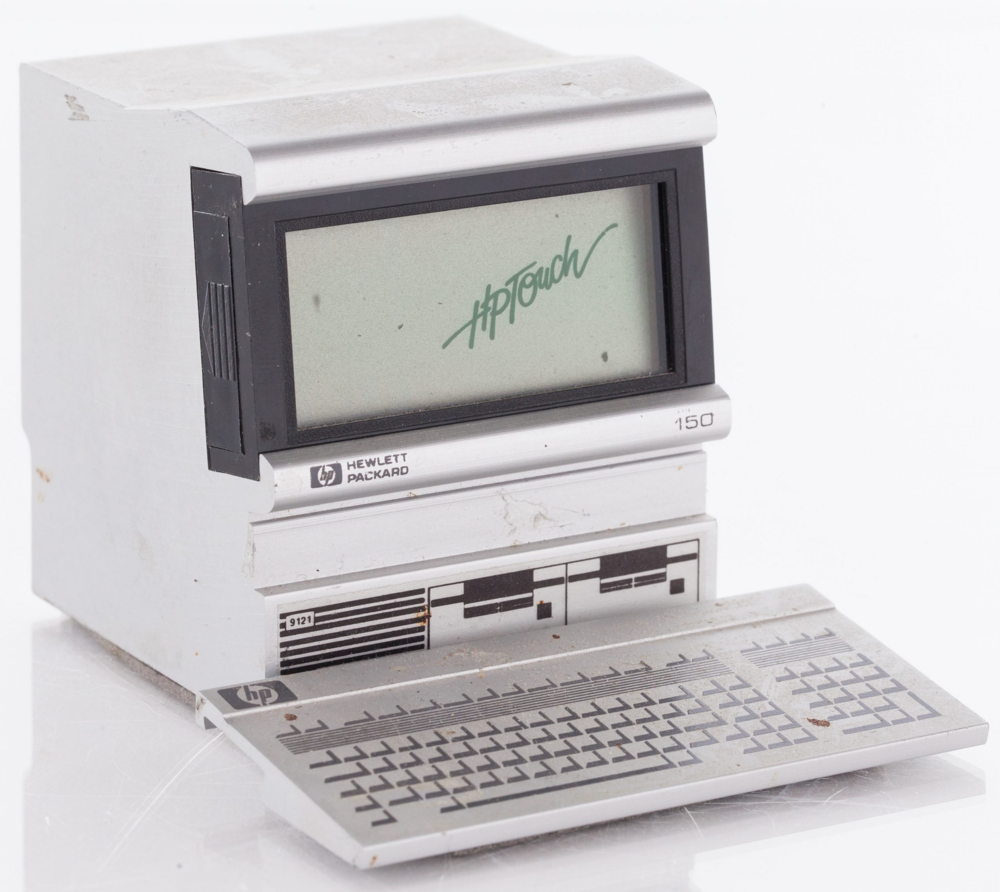
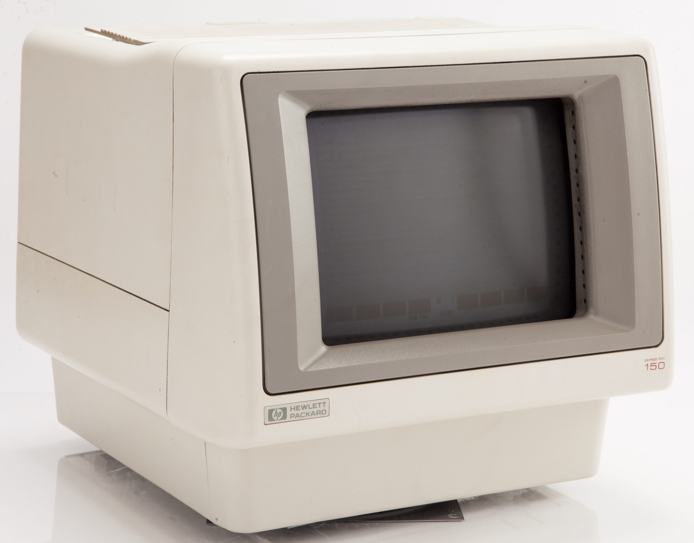

HP-150 Touchscreen
CRT monitor with infrared touch overlay for office PCs.

Overview
The HP-150 (codenamed "Magic" during development) was Hewlett-Packard’s bold attempt to simplify personal computing by making the screen itself the primary input device. Introduced at the COMDEX Fall trade show in Las Vegas on November 28, 1983, it is widely recognised as the first mass-market computer to ship with direct finger‑touch interaction as the main user interface. The machine’s defining feature was a 9-inch Sony CRT surrounded by a bezel that housed a matrix of infrared (IR) emitters and detectors; any non‑transparent object breaking the beams—typically a finger—allowed the system to pinpoint the touch location and translate it to screen coordinates.
Under the hood, the HP-150 was an Intel 8088‑based PC‑workalike that ran a customised version of MS‑DOS (2.01, 2.11 or 3.20) rather than IBM PC DOS. Its 8 MHz CPU was notably faster than the 4.77 MHz 8088 found in the contemporary IBM PC XT, and the base 256 KB of RAM could be expanded to 640 KB via add‑on cards. However, the machine was never fully IBM PC compatible; software had to be written or adapted specifically for the HP-150’s non‑standard BIOS and memory map, which severely limited its third‑party software library.
The system packaged the CRT and logic board in a single compact unit—reminiscent of the original Macintosh—while storage was provided externally. Users could snap on an HP‑IB‑connected HP 9121 dual 3½‑inch floppy‑drive (each diskette holding 270 KB) or an optional hard‑disk unit to create the "HP Touchscreen MAX". Internally, a tiny operating system called TOS (Terminal Operating System) ran two tasks: a terminal emulator and Microsoft DOS itself. The touch‑overlay communicated with the host through a serial link, and the whole ensemble was priced at US $2,795 (equivalent to roughly US $7,000 in 2025), targeting business professionals who wanted a more intuitive way to work with spreadsheets, word processors and custom HP applications.
Deep dive
The HP-150 sprang from Hewlett-Packard’s Personal Computer Group in Fort Collins, Colorado, at a time when the company was searching for ways to differentiate its PC offerings in a market rapidly coalescing around the IBM PC standard. Codenamed "Magic," the project aimed to reduce the perceived complexity of personal computing by replacing the keyboard‑and‑mouse paradigm with a direct‑manipulation touch interface. Engineers opted for an infrared beam‑interruption scheme because it could be overlaid on a standard CRT without degrading image quality, and because the necessary emitters and detectors were already inexpensive, small‑enough components. The concept was demonstrated privately to HP management in 1982, received a green light, and after 18 months of intense development was unveiled at COMDEX in November 1983. At a time when touchscreens were almost unknown outside research labs, the HP‑150 represented a dramatic departure from convention, though HP was careful to position it as a serious business machine rather than a futuristic curiosity.
At its core, the HP-150 used an Intel 8088 microprocessor clocked at 8 MHz, making it nearly 70% faster than the 4.77 MHz PC/XT. The motherboard held 256 KB of RAM (expandable to 640 KB via a proprietary card), and an optional Intel 8087 math coprocessor could be installed on a piggyback board because space constraints on the main PCB prevented a dedicated socket. The 9‑inch Sony Trinitron CRT offered amber or green phosphor and a resolution of 720×200 pixels. The infrared touch system consisted of 26 pairs of IR LEDs and phototransistors embedded in tiny holes along the inside edges of the monitor bezel; a custom controller board scanned the grid continuously, reporting coordinates to the CPU over an RS‑232‑like serial line. Because the bottom row of holes was especially prone to collecting dust—often causing the touch function to fail—users routinely had to vacuum the bezel to restore operation. External storage was managed via HP‑IB (IEEE‑488): the phone‑book‑sized 9121D dual floppy drive that sat beneath the monitor, or the HP 9133V hard‑disk unit for the Touchscreen MAX. Later models (the HP-150II, introduced in 1984) added an 8088 running at 8 MHz as well but offered an internal 3½‑inch floppy drive and greater IBM PC compatibility through a revised BIOS.
The touchscreen was not a simple up‑or‑down digitizer; it could detect the moment a finger broke the beam, track its position while the beam remained broken, and register a tap when the beam returned. This allowed a vocabulary of gestures: a quick touch could select an icon, a press‑and‑hold could drag a scroll bar, and a double‑tap could open a file. HP shipped a suite of productivity applications—Personal Decision Support (a spreadsheet), WordStar customised for touch, and a drawing program—that rendered large, touch‑friendly buttons on screen. Because the bezel stood slightly proud of the CRT surface, the actual contact point was offset from the visible target, requiring a small parallax‑correction routine in software. The operating system’s TOS layer managed both the touch input and a terminal‑emulation window that allowed the HP-150 to connect to HP 3000 minicomputers, blending local DOS applications with host‑based computing. Despite its ingenuity, the touch interface could be tiring for extended use (the screen was not arm‑reaching low) and the lack of haptic feedback made precision tasks like text editing cumbersome, so the keyboard remained essential for heavy data entry.
The HP-150 generated considerable press excitement at launch but failed to carve out a significant market share. Two factors worked against it: first, its incompatibility with the vast library of IBM PC software meant that buyers were confined to a tiny catalogue of HP‑approved programs; second, the infrared bezel was a mechanical weak point that industrial users found too finicky. Pricing, at $2,795 for the floppy‑only configuration, was competitive with the IBM PC/XT, but corporate IT managers were reluctant to adopt a non‑standard platform. An updated HP-150II that offered better IBM PC compatibility and an internal floppy drive arrived in 1984, yet it too struggled. By 1985, HP had quietly withdrawn both models from the market, shifting its PC strategy toward fully IBM‑compatible Vectra machines. The Touchscreen MAX, positioned for high‑end accounting and database work, sold in even smaller numbers. Estimates suggest total HP-150 series sales were fewer than 100 000 units—far below the volume needed to sustain a platform.
Although a commercial disappointment, the HP-150 was a landmark in human‑computer interaction. It was the first computer to demonstrate that finger‑based touch could serve as a practical, everyday pointing device in a mass‑produced desktop system. The infrared matrix technology pioneered on the HP-150 later appeared in countless kiosks, point‑of‑sale terminals, and public‑information displays, where it remained the dominant touch technology until capacitive screens became cheap enough for consumer devices in the mid‑2000s. HP’s experiment also highlighted the importance of software‑hardware co‑design for touch interfaces: applications had to be radically rethought to suit large target areas, gesture recognition, and the absence of a cursor. These lessons echoed through the industry’s later forays into pen computing, PDAs, and ultimately the multi‑touch smartphones that now permeate daily life. The HP-150 thus stands as a prescient, if prematurely executed, vision of a touch‑centric computing future.
Team & pioneers
- Hewlett-Packard Personal Computer Division (Fort Collins, Colorado). Design, development, and manufacturing of the HP-150
Media

